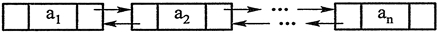

首页 > 编程笔记
C++ list，STL list（双向链表）详解
list 是顺序容器的一种。list 是一个双向链表。使用 list 需要包含头文件 list。双向链表的每个元素中都有一个指针指向后一个元素，也有一个指针指向前一个元素，如图1所示。
在 list 容器中，在已经定位到要增删元素的位置的情况下，增删元素能在常数时间内完成。如图2所示，在 ai 和 ai+1 之间插入一个元素，只需要修改 ai 和 ai+1 中的指针即可。
list 容器不支持根据下标随机存取元素。
list 的构造函数和许多成员函数的用法都与 vector 类似，此处不再列举。除了顺序容器都有的成员函数外，list 容器还独有如表 1 所示的成员函数（此表不包含全部成员函数，且有些函数的参数较为复杂，表中只列出函数名）。
表1中列出的成员函数有些是重载的，如 unique、merge、splice 成员函数都不止一个， 这里不再一一列举并解释。后面对于其他容器以及算法的介绍，对于有重载的情况也不再指出。要详细了解 STL，还需要查阅专门的 STL 手册，或查看编译器提供的联机帮助。
STL 中的算法 sort 可以用来对 vector 和 deque 排序，它需要随机访问迭代器的支持。因为 list 不支持随机访问迭代器，所以不能用算法 sort 对 list 容器排序。因此，list 容器引入了 sort 成员函数以完成排序。
list 的示例程序如下：
【实例】用 list 解决约瑟夫问题。
约瑟夫问题是：有 n 只猴子，按顺时针方向围成一圈选大王（编号为 1~n），从第 1 号开始报数，一直数到 m，数到 m 的猴子退到圈外，剩下的猴子再接着从 1 开始报数。就这样，直到圈内只剩下一只猴子时，这个猴子就是猴王。编程求输入 n、m 后,输出最后猴王的编号。
输入数据：每行是用空格分开的两个整数，第一个是 n，第二个是 m（0<m, n<=1 000 000）。最后一行是：
0 0
输出要求：对于每行输入数据（最后一行除外），输出数据也是一行，即最后猴王的编号。
输入样例：
6 2
12 4
8 3
0 0
输出样例：
5
1
7
示例程序如下：
这个程序也可以用 vector 实现，但是执行速度要慢很多。因为 vector 的 erase 操作牵涉元素的移动，不能在常数时间内完成，所花费的时间和容器中的元素个数有关；而 list 的 erase 操作只是修改几个指针而已，可以在常数时间内完成。当 n 很大（数十万）时，两种写法在速度上会有明显区别。
在 list 容器中，在已经定位到要增删元素的位置的情况下，增删元素能在常数时间内完成。如图2所示，在 ai 和 ai+1 之间插入一个元素，只需要修改 ai 和 ai+1 中的指针即可。

图1 ：双向链表

图2：在双向链表中插入元素
图1 ：双向链表
图2：在双向链表中插入元素
list 容器不支持根据下标随机存取元素。
list 的构造函数和许多成员函数的用法都与 vector 类似，此处不再列举。除了顺序容器都有的成员函数外，list 容器还独有如表 1 所示的成员函数（此表不包含全部成员函数，且有些函数的参数较为复杂，表中只列出函数名）。
| 成员函数或成员函数模板 | 作 用 |
|---|---|
| void push_front(const T & val) | 将 val 插入链表最前面 |
| void pop_front() | 删除链表最前面的元素 |
| void sort() | 将链表从小到大排序 |
| void remove (const T & val) | 删除和 val 相等的元素 |
| remove_if | 删除符合某种条件的元素 |
| void unique() | 删除所有和前一个元素相等的元素 |
| void merge(list <T> & x) | 将链表 x 合并进来并清空 x。要求链表自身和 x 都是有序的 |
| void splice(iterator i, list <T> & x, iterator first, iterator last) | 在位置 i 前面插入链表 x 中的区间 [first, last)，并在链表 x 中删除该区间。链表自身和链表 x 可以是同一个链表，只要 i 不在 [first, last) 中即可 |
表1中列出的成员函数有些是重载的，如 unique、merge、splice 成员函数都不止一个， 这里不再一一列举并解释。后面对于其他容器以及算法的介绍，对于有重载的情况也不再指出。要详细了解 STL，还需要查阅专门的 STL 手册，或查看编译器提供的联机帮助。
STL 中的算法 sort 可以用来对 vector 和 deque 排序，它需要随机访问迭代器的支持。因为 list 不支持随机访问迭代器，所以不能用算法 sort 对 list 容器排序。因此，list 容器引入了 sort 成员函数以完成排序。
list 的示例程序如下：
#include <list> //使用 list 需要包含此头文件 #include <iostream> #include <algorithm> //使用STL中的算法需要包含此头文件 using namespace std; class A { private: int n; public: A(int n_) { n = n_; } friend bool operator < (const A & a1, const A & a2); friend bool operator == (const A & a1, const A & a2); friend ostream & operator << (ostream & o, const A & a); }; bool operator < (const A & a1, const A & a2) { return a1.n < a2.n; } bool operator == (const A & a1, const A & a2) { return a1.n == a2.n; } ostream & operator << (ostream & o, const A & a) { o << a.n; return o; } template <class T> void Print(T first, T last) { for (; first != last; ++first) cout << *first << " "; cout << endl; } int main() { A a[5] = { 1, 3, 2, 4, 2 }; A b[7] = { 10, 30, 20, 30, 30, 40, 40 }; list<A> lst1(a, a + 5), lst2(b, b + 7); lst1.sort(); cout << "1)"; Print(lst1.begin(), lst1.end()); //输出：1)1 2 2 3 4 lst1.remove(2); //删除所有和A(2)相等的元素 cout << "2)"; Print(lst1.begin(), lst1.end()); //输出：2)1 3 4 lst2.pop_front(); //删除第一个元素 cout << "3)"; Print(lst2.begin(), lst2.end()); //输出：3)30 20 30 30 40 40 lst2.unique(); //删除所有和前一个元素相等的元素 cout << "4)"; Print(lst2.begin(), lst2.end()); //输出：4)30 20 30 40 lst2.sort(); lst1.merge(lst2); //合并 lst2 到 lst1 并清空 lst2 cout << "5)"; Print(lst1.begin(), lst1.end()); //输出：5)1 3 4 20 30 30 40 cout << "6)"; Print(lst2.begin(), lst2.end()); //lst2是空的，输出：6) lst1.reverse(); //将 lst1 前后颠倒 cout << "7)"; Print(lst1.begin(), lst1.end()); //输出 7)40 30 30 20 4 3 1 lst2.insert(lst2.begin(), a + 1, a + 4); //在 lst2 中插入 3,2,4 三个元素 list <A>::iterator p1, p2, p3; p1 = find(lst1.begin(), lst1.end(), 30); p2 = find(lst2.begin(), lst2.end(), 2); p3 = find(lst2.begin(), lst2.end(), 4); lst1.splice(p1, lst2, p2, p3); //将[p2, p3)插入p1之前，并从 lst2 中删除[p2,p3) cout << "8)"; Print(lst1.begin(), lst1.end()); //输出：8)40 2 30 30 20 4 3 1 cout << "9)"; Print(lst2.begin(), lst2.end()); //输出：9)3 4 return 0; }
【实例】用 list 解决约瑟夫问题。
约瑟夫问题是：有 n 只猴子，按顺时针方向围成一圈选大王（编号为 1~n），从第 1 号开始报数，一直数到 m，数到 m 的猴子退到圈外，剩下的猴子再接着从 1 开始报数。就这样，直到圈内只剩下一只猴子时，这个猴子就是猴王。编程求输入 n、m 后,输出最后猴王的编号。
输入数据：每行是用空格分开的两个整数，第一个是 n，第二个是 m（0<m, n<=1 000 000）。最后一行是：
0 0
输出要求：对于每行输入数据（最后一行除外），输出数据也是一行，即最后猴王的编号。
输入样例：
6 2
12 4
8 3
0 0
输出样例：
5
1
7
示例程序如下：
#include <list>
#include <iostream>
using namespace std;
int main()
{
list<int> monkeys;
int n, m;
while (true) {
cin >> n >> m;
if (n == 0 && m == 0)
break;
monkeys.clear(); //清空list容器
for (int i = 1; i <= n; ++i) //将猴子的编号放入list
monkeys.push_back(i);
list<int>::iterator it = monkeys.begin();
while (monkeys.size() > 1) { //只要还有不止一只猴子，就要找一只猴子让其出列
for (int i = 1; i < m; ++i) { //报数
++it;
if (it == monkeys.end())
it = monkeys.begin();
}
it = monkeys.erase(it); //删除元素后，迭代器失效，
//要重新让迭代器指向被删元素的后面
if (it == monkeys.end())
it = monkeys.begin();
}
cout << monkeys.front() << endl; //front返回第一个元素的引用
}
return 0;
}
erase 成员函数返回被删除元素后面那个元素的迭代器。如果被删除的是最后一个元素，则返回 end()。这个程序也可以用 vector 实现，但是执行速度要慢很多。因为 vector 的 erase 操作牵涉元素的移动，不能在常数时间内完成，所花费的时间和容器中的元素个数有关；而 list 的 erase 操作只是修改几个指针而已，可以在常数时间内完成。当 n 很大（数十万）时，两种写法在速度上会有明显区别。
关注公众号「站长严长生」，在手机上阅读所有教程，随时随地都能学习。内含一款搜索神器，免费下载全网书籍和视频。

微信扫码关注公众号